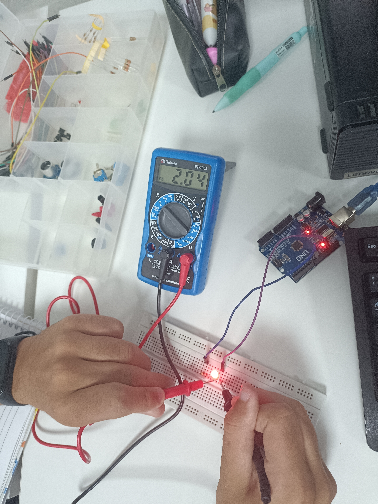
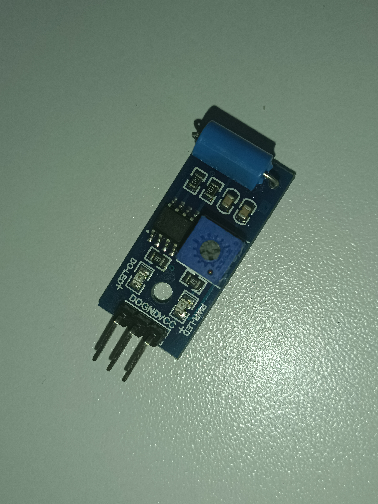

.jpg)
usando o multímetro para medir a Queda de Tensão (Voltagem) em Corrente Contínua diretamente sobre o LED vermelho aceso.

É um módulo sensor de inclinação e vibração por esfera, muito utilizado em projetos com Arduino para detectar impactos mecânicos, chacoalhões ou mudanças de posição. Dentro do cilindro azul texturizado na ponta da placa, existem duas pequenas esferas metálicas que se movimentam livremente; quando o módulo está na posição horizontal correta, essas esferas rolam para o fundo e fecham um contato elétrico, enquanto qualquer inclinação ou vibração faz com que elas se desloquem, abrindo o circuito imediatamente. Para facilitar o uso na eletrônica digital, a placa conta com um chip comparador LM393 que limpa esse sinal físico e o transforma em dados digitais prontos para o microcontrolador, além de trazer dois LEDs indicadores: o "PWR-LED", que avisa se a placa está energizada, e o "DO-LED", que acende em tempo real quando o sensor detecta movimento. O circuito oferece ainda um potenciômetro azul (trimpot) centralizado para que você possa regular manualmente a sensibilidade do disparo, permitindo calibrar o sensor para ignorar pequenas trepidações da bancada ou reagir ao menor dos toques. Por fim, a conexão com a protoboard é feita de forma simples através dos pinos dourados na base da placa, onde o pino VCC deve ser ligado ao polo positivo de energia, o GND ao negativo/terra, e o pino DO (Saída Digital) diretamente a uma porta do seu Arduino para enviar as leituras de nível lógico alto ou baixo.
Demonstração prática de um circuito básico montado em uma protoboard utilizando um LED vermelho, um resistor limitador de corrente e cabos de conexão (jumpers). No experimento, é aplicado um efeito de dimerização com intervalo de 100ms, permitindo observar o controle da intensidade luminosa do LED de forma dinâmica e precisa.